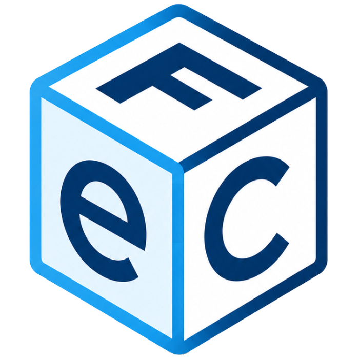

FeC-PlusScarica fatture elettroniche e corrispettivi dal portale «Fatture e Corrispettivi» dell'Agenzia delle Entrate, con una semplice interfaccia grafica e un unico login.
Tutte le operazioni partono da un'unica autenticazione al portale AdE, riusata per ogni download.
Una sola autenticazione (SAM/ForgeRock + scelta dell'utenza di lavoro), senza password sulla riga di comando.
Studio (delega cliente o cassetto proprio), Azienda, Libero professionista/Me stesso: un unico selettore comune a tutte le operazioni.
Emesse, ricevute, transfrontaliere e messe a disposizione, con i relativi metadati. Periodi lunghi spezzati e scaricati in automatico a blocchi.
Fatture emesse/ricevute/messe a disposizione e corrispettivi: genera e invia l'XML all'Agenzia delle Entrate, e scarica i risultati delle richieste già inviate.
Archivio locale dei clienti delegati, con import/export CSV compatibile con l'esportazione ufficiale dell'AdE.
Elenco fatture o corrispettivi in un file .xlsx, con riepilogo per aliquota/natura IVA.
Riepilogo CSV (elenco A/B, importo, stato pagamento) per trimestre o anno intero.
Interfaccia grafica (tkinter) per Windows e macOS, leggera e senza installazione complessa.
Su Windows, senza installare nulla: scarica FeC-Plus.exe dalla sezione Releases del repository ed eseguilo. In alternativa, da sorgente serve Python 3.12.
pip install -r requirements.txt e playwright install chromium.avvia_fec.command (macOS), avvia_fec.bat (Windows) o python fec_gui.py.git clone https://github.com/denvermotel/FeC-Plus.git cd FeC-Plus python3.12 -m venv .venv source .venv/bin/activate # Windows: .venv\Scripts\activate pip install -r requirements.txt playwright install chromium python fec_gui.py
FeC-Plus nasce come evoluzione e ampliamento di progetti open source preesistenti. L'aggiunta dell'interfaccia grafica e delle nuove logiche si poggia su solide fondamenta scritte da altri sviluppatori.
Un ringraziamento speciale va agli autori originali:
Il progetto attuale (FeC-Plus) è sviluppato e mantenuto da Giovanni Genna (@denvermotel).